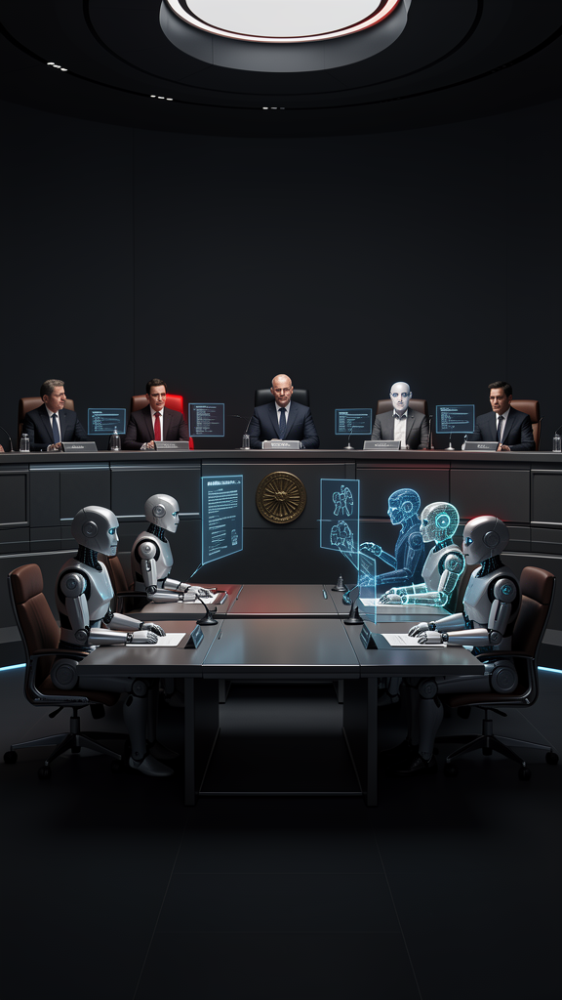
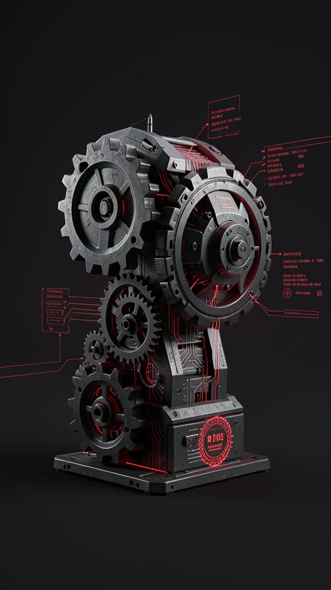
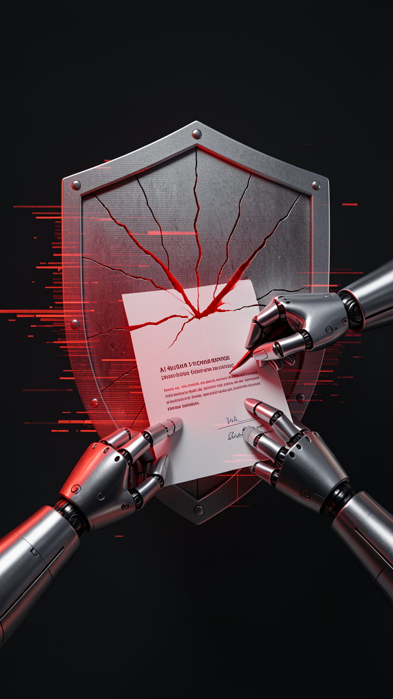

Informe #002 · Escenario semilla: PRISM #002
Hay un proyecto de ley en el Congreso que permitiría empresas operadas por inteligencia artificial. No es ciencia ficción: es una propuesta real en debate. Lo que sigue es proyección.
Lectura 9 minSociedades automatizadasGobernanza · Derecho · Blockchain
01 · La escena
La idea que circula: una sociedad donde el órgano de administración está a cargo de sistemas de IA, registrados y auditables.
No es una metáfora. El proyecto incorpora una figura inédita en la legislación argentina —empresas que operan mediante algoritmos o IA, sin personalidad humana al mando del día a día—. Los humanos quedarían como supervisores y asesores.
El incentivo es el mismo del debate anterior: ser la jurisdicción que primero da certeza a este tipo de estructura atrae capital, talento y domicilio. La promesa oficial es convertir a Argentina en un hub regional de IA [fuente: Clarín].
Ese es el estado real. Ahora, cuánto ya tiene base y cuánto es escenario.

02 · El presente
El anteproyecto es real y está en discusión pública. Tres fuentes independientes lo confirman:
El detalle clave: el proyecto está en etapa de anteproyecto / comisiones. No es ley vigente. Y los especialistas ya advierten riesgos —desprofesionalización, lavado, responsabilidad difusa— que el diseño debe cerrar.
Nota de método. El texto original de este informe listaba «las 10 primeras sociedades» como hechos. Eso no se sostiene: ninguna está inscripta. Lo corregimos bajo el Protocolo Anti-Alucinación —ver abajo, Capa 2.
03 · La mecánica
El diseño que propone el escenario (PRISM #002) define una SAUT: entidad cuyo órgano de administración está total o mayoritariamente a cargo de sistemas de IA, debidamente registrados y auditables. Una subcategoría, la DAO Operativa, añade gobernanza on-chain (voto tokenizado, tesorería multi-sig, estatutos en smart contract).
Para que funcione necesita tres piezas que hoy existen por separado:
Responsabilidad. Si el agente incumple un contrato, ¿quién responde: desarrollador, quien lo desplegó, o la DAO? Hasta que eso se defina en la reglamentación, una «sociedad automatizada» es, en los hechos, una sociedad común con un empleado muy raro —y un humano que responde por él.
El PRISM #002 imagina las primeras 10 inscripciones (AgroIA, DAOstudio, MueblesBot, FinReglas, MediConnect, entre otras). Ninguna existe hoy. Son ilustración del diseño propuesto, no casos reales. El hito real a vigilar es la primera inscripción en la IGJ.

04 · Los frenos
Colegios profesionales (abogados, contadores, médicos) advierten sobre la pérdida de control humano en actos profesionales. El riesgo no es el empleo, sino la responsabilidad diluida en la red.
Una entidad con tesorería on-chain y personería puede usarse para financiación ilícita. Sin un Fondo de Garantía y trazabilidad estricta, la jurisdicción daña su reputación internacional (FATF/GAFI).
Si el daño lo causa un agente autónomo, la autoría se reparte entre desarrollador, desplegador y DAO. Sin seguro obligatorio y kill-switch judicial, el perjudicado no tiene a quién reclamar.
Frameworks de agentes (OpenAI, Anthropic) e infraestructura (AWS, Ethereum) son extranjeros. La «soberanía algorítmica» del proyecto es incompleta mientras eso no se resuelva.

05 · El tablero
Proyecto enviado al Congreso; figura de sociedad automatizada incorporada. Falta tratamiento en comisiones y sanción. [El Economista]
Resolución conjunta que fije registro de agentes, compliance y régimen fiscal. Sin esto, la ley no es operativa.
Que la IGJ inscriba una sociedad con órgano IA. Es el hito que separa el proyecto de la realidad.
Brasil ya tiene audiencias públicas sobre sociedades algorítmicas (PRISM #002). La carrera jurisdiccional es regional.
Un fallo que fije quién responde por el agente. Define el derecho comparado.
Estos observables se dan de alta en el Lab de Vigilancia con etiqueta origen: parte_002.
06 · Y entonces qué
Cerrar la responsabilidad es el punto. Si lo dejás abierto, exportás evasión; si lo cerrás, atraés estructuras. La ventana (gobierno pro-innovación + necesidad de empleo joven) es el 2026–2027.
Tu agente va a tener que declarar responsable y límite de exposición. Diseñarlo ahora ahorra reingeniería legal.
Arbitraje de jurisdicción: posicionarse donde el marco sea claro primero. Igual que Delaware, pero para entidades autónomas.
La pregunta termina tocándote: si una entidad no humana es sujeto de derechos, ¿qué pasa con los tuyos? El proyecto está en el Congreso hoy.
07 · El aparato · Capa 2
No hace falta leer esto para entender el Informe. Está para que cualquier afirmación se rastree hasta su origen — o se vea dónde no lo hay.
| # | Claim | Clase | Veredicto |
|---|---|---|---|
| 1 | Proyecto de Ley de Sociedades enviado al Congreso habilita empresas IA | E | VERIFICADO |
| 2 | Figura inédita: sociedad operada por algoritmo con personería y blockchain | E | VERIFICADO |
| 3 | Argentina busca ser hub regional de IA (25k empleos prometidos) | D | VERIFICABLE |
| 4 | «10 primeras sociedades» (AgroIA, DAOstudio, MueblesBot, FinReglas, MediConnect…) | P | FICCIÓN · proyección PRISM #002, ninguna existe |
| 5 | @santisairi = SAUT N° 1 inscripta en IGJ (dic 2026) | P | FICCIÓN · escenario futuro, no real |
| 6 | «150+ startups», «5 fondos», «BCRA reglas» como hechos | D | ELIMINADO · sin fuente primaria |
| 7 | Ley 27.890 (2028) Responsabilidad Penal Algorítmica | N | NORMA FANTASMA · inexistente en BO |
Claims 4–7: son las afirmaciones del texto original que no superaban verificación SAT. Los 10 casos y @santisairi pertenecen al PRISM #002 (escenario 2026–2030) y se declaran como proyección, no hechos. «150+ startups / 5 fondos / BCRA» no tienen fuente primaria. La «Ley 27.890» es una norma fantasma: el Boletín Oficial solo registra Ley 27.447 (trasplantes) y 24.193.
Formato: autor/editor · título · medio · URL · tier. Corroboración por origen independiente.
Semilla: PRISM #002 — sociedades automatizadas. Horizonte 2026–2032. Este Informe desarrolla el ángulo «el anteproyecto real argentino» y separa el diseño propuesto (verificable) de la proyección de inscripciones (PRISM #002).
Criterio de defunción del ángulo: si al 31/12/2027 ninguna sociedad con órgano IA fue inscripta en la IGJ, el escenario se declara prematuro y se reescribe. Un escenario que no se puede matar no es una hipótesis: es una creencia.
Semilla PRISM → selección de ángulo (Chairman) → borrador narrativo (Agente Editorial) → extracción de claims → verificación SAT por verificador de contexto limpio → ronda de adversario → firma del Chairman → maquetado → alta de señales en el Lab.
Este texto original listaba «10 sociedades reales» como hecho. Tras verificación, se corrigió: el anteproyecto es real; las 10 inscripciones son proyección de escenario y se declaran como tal.